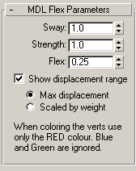
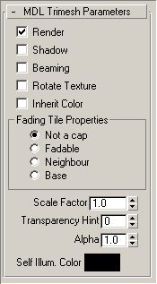
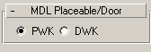
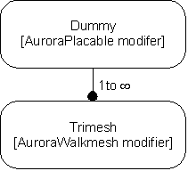
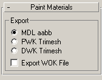

|
 |
|||||||||
ModifiersAuroraFlexThe flex modifier models the same system used in the MDL Plugin Suite. In this system there is a slight alteration in terms used and in one case the values. The Flex modifier is applied to an editable mesh. There is currently no tool for painting the vertex colours. At the moment you select the vertexs and then set their colour values. A colour painter tool will be available in the next release.
 AuroraTrimeshThe trimesh modifier allows the modeller to control a number of in game features for an editable mesh. Not the least of these is if the mesh will even render in the game. An interesting ability is to have a mesh that does not render but will cast a shadow. This modifer is used in tiles to determine fading properties.  AuroraPlaceableUsed to identify a mesh as being a walkmesh for Placeables and
Doors by applying it to an editable mesh. The structure for this is to
have a Dummy helper with the
correct name for the pwk or dwk file. The naming format
for the dummy node is <model name>_<pwk|dwk> (e.g.
somemodel_pwk). The actual pwk/dwk planes can be any name you like so
long as they have a Walkmesh modifier and are linked to the dummy node.
The following structure diagram shows the relationship. While this
modifier can be used at the trimesh level it is really most likely to
be used to flag the dummy object as a pwk/dwk dummy. Why is this
important? Because everything
linked to the dummy node tagged with this modifier will be exported to
the pwk/dwk file.   AuororaWalkmeshThis is used to identify a mesh as a walkmesh for either a placeable, door or a tile wok.  |
||||||||||
 |
 |